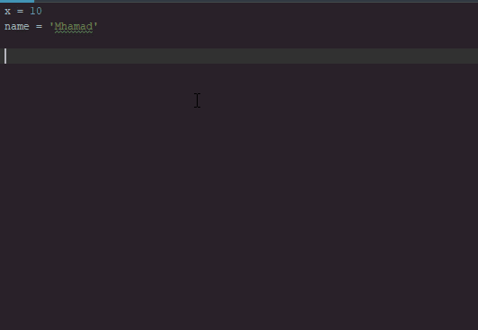

Pythonأنواع المتغيرات في بايثون
مفهوم المتغيرات في بايثون
متغير: تعني variable في اللغة الإنجليزية.
الآن, نريدك أن تفهم المتغيرات على أنها فقط أماكن يتم حجزها في الذاكرة لتخزين البيانات أثناء تشغيل البرنامج.
في بايثون, المبرمج غير مسؤول عن تحديد أنواع المتغيرات التي يعرّفها في برنامجه.
فعلياً, عندما تقوم بتعريف متغير و تضع فيه أي قيمة, سيقوم مفسّر لغة بايثون بتحديد نوع هذا المتغير بناءاً على القيمة التي أسندتها إليه بشكل تلقائي وقت التشغيل.
في بايثون يجب إسناد قيمة إلى المتغير أثناء تعريفه.
المثال الأول
Test.py
var = 5 # و قيمته 5 var هنا قمنا بتعريف متغير إسمه
print(var) # var هنا قمنا بطباعة قيمة المتغير
•سنحصل على النتيجة التالية عند التشغيل.
5
في بايثون يمكن تعريف عدة متغيرات متساوية في القيمة في وقت واحد.
المثال الثاني
Test.py
x = y = z = 10 # 10 هنا قمنا بتعريف ثلاث متغيرات قيمتها
print('x = ', x) # x هنا قمنا بطباعة قيمة المتغير
print('y = ', y) # y هنا قمنا بطباعة قيمة المتغير
print('z = ', z) # z هنا قمنا بطباعة قيمة المتغير
•سنحصل على النتيجة التالية عند التشغيل.
x = 10
y = 10
z = 10
معرفة نوع المتغير في بايثون
لمعرفة نوع أي متغير يمكنك إستخدام الدالة type().
تذكر: نوع المتغير في بايثون غير ثابت لأنه يتغير بشكل تلقائي على حسب نوع القيمة التي يتم تخزينها فيه.
مثال
Test.py
var = 10 # var هنا وضعنا رقم في المتغير
print(type(var)) # لأنها عبارة عن رقم int لاحظ أن نوعها سيكون .var هنا طبعنا نوع قيمة المتغير
var = 'harmash' # var هنا وضعنا نص في المتغير
print(type(var)) # لأنها عبارة عن نص str لاحظ أن نوعها سيكون .var هنا طبعنا نوع قيمة المتغير
•سنحصل على النتيجة التالية عند التشغيل.
<class 'int'>
<class 'str'>
أنواع المتغيرات في بايثون
تنقسم أنواع المتغيرات في بايثون إلى 7 أنواع أساسية و هي:
أرقام (Numbers).
نصوص (Strings).
منطقية (Booleans).
مصفوفات ليس لها حجم ثابت يقال لها Lists.
مصفوفات حجمها و قيمها ثابتة, و غير قابلة للتغيير يقال لها Tuples.
مصفوفات ليس لها حجم ثابت, و لا يمكن حذف قيمها, و يمكن إضافة قيم جديدة فيها يقال لها Sets.
جداول تخزن البيانات فيها بطريقة مفايتح (Keys) و قيم (Values) يقال لها Dictionaries.
الأرقام في بايثون
عند تعريف متغير و تخزين رقم فيه, فإن مفسّر لغة بايثون سيقوم بشكل تلقائي بتحديد نوع هذا المتغير بناءاً على نوع القيمة الرقمية التي تم إسنادها إليه.
فإذا وضعت فيه عدد صحيح, يصبح نوعه int. و إذا وضعت فيه عدد عشري ( أي يحتوي على فاصلة ), يصبح نوعه float و هكذا.
أنواع الأرقام في بايثون تنقسم إلى 3 أنواع كما في الجدول التالي.
| النوع |
إستخدامه |
مثال |
int |
يستخدم لتخزين أعداد صحيحة. |
x = 3 |
float |
يستخدم لتخزين أعداد تحتوي على فاصلة عشرية. |
x = 1.5 |
complex |
يستخدم لتخزين أعداد مركبة (Complex Number) و التي غالباً ما يحتاجها المهندسون عند إجراء عمليات حاسبية معقدة.
ملاحظة: هنا يجب وضع الحرف J أو j مباشرةً بعد العدد حتى يعرف مفسّر بايثون أنك تقصد عدد مركب و ليس عدد عادي. |
x = 4J |
في المثال التالي قمنا بتعريف ثلاث متغيرات و كل متغير وضعنا فيه قيمة رقمية مختلفة في النوع و القيمة. بعدها قمنا بعرض نوع كل متغير منهم.
مثال
Test.py
x = 3 # قيمته عبارة عن عدد صحيح ,x هنا قمنا بتعريف متغير إسمه
y = 1.5 # قيمته عبارة عن عدد عشري ,y هنا قمنا بتعريف متغير إسمه
z = 4J # قيمته عبارة عن عدد مركب ,z هنا قمنا بتعريف متغير إسمه
print(type(x)) # x هنا طبعنا نوع قيمة المتغير
print(type(y)) # y هنا طبعنا نوع قيمة المتغير
print(type(z)) # z هنا طبعنا نوع قيمة المتغير
•سنحصل على النتيجة التالية عند التشغيل.
<class 'int'>
<class 'float'>
<class 'complex'>
ملاحظة
صحيح أن مفسّر بايثون يقوم بتحديد أنواع القيم بشكل تلقائي عنك لكن هذا لا يعني أنك غير قادر على تحويل أنواع الأرقام إلى النوع الذي يناسبك.
ستتعرف على دوال خاصة للتعامل مع الأرقام و ستتعلم طريقة تحويل أنواع الأرقام في درس خاص لاحقاً في هذه الدورة.
النصوص في بايثون
لتعريف نص في بايثون نستخدم الرمز ' أو الرمز " أو الرمز """.
هل يوجد فرق بين هذه الرموز؟
بالنسبة للرمز ' و الرمز " فإنه لا يوجد أي فرق بينهما. و يمكن إستخدام أي واحد منهما لتعريف نص يتألف من سطر واحد.
بالنسبة للرمز ''' و الرمز """ فإنه لا يوجد أي فرق بينهما. و يمكن إستخدام أي واحد منهما لتعريف نص كبير يتألف من عدة أسطر.
في المثال التالي قمنا بتعريف ثلاث متغيرات تحتوي على قيم نصية. لاحظ أننا قمنا بتعريف كل متغيير بواسطة رمز مختلف.
المثال الأول
Test.py
# هنا قمنا بتعريف ثلاث متغيرات تحتوي على قيم نصية
name = 'Mhamad'
job = "Programmer"
message = '''This string that will span across multiple lines. No need to use newline characters for the next lines.
The end of lines within this string is counted as a newline when printed.'''
# هنا قمنا بعرض قيم المتغيرات النصية بأسلوب مرتب
print('Name: ', name)
print('Job: ', job)
print('Message: ', message)
•سنحصل على النتيجة التالية عند التشغيل.
Name: Mhamad
Job: Programmer
Message: This string that will span across multiple lines. No need to use newline characters for the next lines.
The end of lines within this string is counted as a newline when printed.
في المثال التالي قمنا بتعريف نص يحتوي على نفس الرموز التي تستخدم لتعريف النصوص.
المثال الثاني
Test.py
# يحتوي على قيمة نصية text هنا قمنا بتعريف متغير إسمه
text = """In this line we print 'single quotations'
In this line we print "double quotations" """
# text هنا قمنا بعرض قيمة المتغير
print(text)
•سنحصل على النتيجة التالية عند التشغيل.
In this line we print 'single quotations'
In this line we print "double quotations"
ملاحظة
هناك أساليب و دوال خاصة للتعامل مع النصوص سنشرحها في درس خاص لاحقاً في هذه الدورة.
القيم المنطقية في بايثون
النوع bool يستخدم في العادة عند وضع شروط منطقية أو لمعرفة ما إذا تم تنفيذ أمر معين بنجاح أم لا.
عند إسناد القيمة True أو القيمة False إلى المتغير فإنه يصبح من النوع bool.
معلومة تقنية
في الواقع القيمة True تساوي 1 و القيمة False تساوي 0.
في بايثون يفضل إستخدام الصفر و الواحد بدلاً من إستخدام القيم المحجوزة True و False عند التشييك على قيمة المتغير أو على ما سترجعه الدالة.
في المثال التالي قمنا بتعريف متغير إسمه check و أعطيناه القيمة True ثم إستخدمناه في وضع شرط.
مثال
Test.py
# True و قيمته check هنا قمنا بتعريف إسمه
check = True
# True تساوي check سيتم تنفيذ أمر الطباعة الموضوع هنا إذا كانت قيمة المتغير
if check == True:
print('check = True')
# False أي إذا كانت تساوي True تساوي check سيتم تنفيذ أمر الطباعة الموضوع هنا إذا لم تكن قيمة المتغير
else:
print('check = False')
•سنحصل على النتيجة التالية عند التشغيل.
check = True
ملاحظة
بدل الأمر if check == True: كان يمكنك كتابة if check == 1: أو كتابة if check: فقط و الحصول على نفس النتيجة.
تخزين البيانات في List في بايثون
الـ List عبارة عن مصفوفة حجمها غير ثابت و يمكنها تخزين قيم من مختلف الأنواع في وقت واحد.
في بايثون نستخدم الرمز [ ] لتعريف مصفوفة أحادية ( أي ذات بعد واحد ) ليس لها حجم ثابت.
في المثال التالي قمنا بتعريف 4 مصفوفات.
المثال الأول
Test.py
A = [] # هنا قمنا بتعريف مصفوفة فارغة
B = [10, 20, 30, 40, 50] # هنا قمنا بتعريف مصفوفة تحتوي على أعداد صحيحة فقط
C = ['Mhamad', 'Samer', 'Abdullah'] # هنا قمنا بتعريف مصفوفة تحتوي على نصوص فقط
D = [1, 'two', 'three', 4] # هنا قمنا بتعريف مصفوفة تحتوي على أعداد صحيحة و نصوص
في المثال التالي قمنا بتعريف مصفوفة تتألف من 4 عناصر, ثم قمنا بإعطائها 4 قيم, ثم قمنا بإضافة عنصر جديد عليها, ثم عرضنا قيمها و عدد عناصرها.
المثال الثاني
Test.py
# هنا قمنا بتعريف مصفوفة من النصوص تتألف من 4 عناصر
languages = [str] * 4
# هنا قمنا بوضع قيمة في كل عنصر فيها
languages[0] = 'Arabic'
languages[1] = 'French'
languages[2] = 'English'
languages[3] = 'Spanish'
# هنا قمنا بإضافة عنصر جديد على المصفوفة
languages.append('German')
# هنا قمنا بعرض قيم المصفوفة و عدد عناصرها
print('Stored languages:', languages)
print('Number of stored languages is:', len(languages))
•سنحصل على النتيجة التالية عند التشغيل.
Stored languages: ['Arabic', 'French', 'English', 'Spanish', 'German']
Number of stored languages is: 5
ملاحظة
ستتعرف على دوال خاصة للتعامل مع الـ Lists و سبب إستخدامهم و ستتعلم طرق كثيرة للتعامل معهم في درس خاص لاحقاً في هذه الدورة.
تخزين البيانات في Tuple في بايثون
الـ Tuple عبارة عن مصفوفة حجمها ثابت و قيمها غير قابلة للتغيير و يمكنها تخزين قيم من مختلف الأنواع في وقت واحد.
في بايثون نستخدم الرمز ( ) لتعريف مصفوفة أحادية ( أي ذات بعد واحد ) حجمها و قيمها ثابتة.
في المثال التالي قمنا بتعريف 4 مصفوفات.
المثال الأول
Test.py
A = () # هنا قمنا بتعريف مصفوفة فارغة
B = (10, 20, 30, 40, 50) # هنا قمنا بتعريف مصفوفة تحتوي على أعداد صحيحة فقط
C = ('Mhamad', 'Samer', 'Abdullah') # هنا قمنا بتعريف مصفوفة تحتوي على نصوص فقط
D = (1, 'two', 'three', 4) # هنا قمنا بتعريف مصفوفة تحتوي على أعداد صحيحة و نصوص
في المثال التالي قمنا بتعريف مصفوفة تتألف من 4 عناصر ثابتة, ثم عرضنا قيمها و عدد عناصرها.
المثال الثاني
Test.py
# هنا قمنا بتعريف مصفوفة ليس لها نوع محدد و تتألف من 4 عناصر
languages = ('Arabic', 'French', 'English', 'Spanish')
# هنا قمنا بعرض قيم المصفوفة و عدد عناصرها
print('Stored languages:', languages)
print('Number of stored languages is:', len(languages))
•سنحصل على النتيجة التالية عند التشغيل.
Stored languages: ('Arabic', 'English', 'French', 'Spanish')
Number of stored languages is: 4
ملاحظة
ستتعرف على دوال خاصة للتعامل مع الـ Tuples و سبب إستخدامهم و ستتعلم طرق كثيرة للتعامل معهم في درس خاص لاحقاً في هذه الدورة.
تخزين البيانات في Set في بايثون
الـ Set عبارة عن مصفوفة ليس لها حجم ثابت و قيمها غير قابلة للتغيير و يمكنها تخزين قيم من مختلف الأنواع في وقت واحد.
في بايثون نستخدم الرمز { } لتعريف مصفوفة أحادية ( أي ذات بعد واحد ) ليس لها حجم ثابت و قيمها غير قابلة للتغيير.
في مصفوفات الـ Set يتم تخزين البيانات بشكل عشوائي و ليس بالترتيب كما تم إدخالهم, و السبب في أنه في هذا النوع من المصفوفات لا يتم إعطاء رقم Index خاص لكل عنصر.
لهذا السبب أيضاً, لا يمكنك الوصول لعنصر محدد في Set بشكل مباشر لأنه في الأساس لا يملك رقم Index.
في المثال التالي قمنا بتعريف 4 مصفوفات.
المثال الأول
Test.py
A = {} # هنا قمنا بتعريف مصفوفة فارغة
B = {10, 20, 30, 40, 50} # هنا قمنا بتعريف مصفوفة تحتوي على أعداد صحيحة فقط
C = {'Mhamad', 'Samer', 'Abdullah'} # هنا قمنا بتعريف مصفوفة تحتوي على نصوص فقط
D = {1, 'two', 'three', 4} # هنا قمنا بتعريف مصفوفة تحتوي على أعداد صحيحة و نصوص
في المثال التالي قمنا بتعريف مصفوفة تتألف من 4 عناصر ثابتة, ثم عرضنا قيمها و عدد عناصرها.
المثال الثاني
Test.py
# هنا قمنا بتعريف مصفوفة ليس لها نوع محدد و تتألف من 4 عناصر
languages = {'Arabic', 'French', 'English', 'Spanish'}
# هنا قمنا بعرض قيم المصفوفة و عدد عناصرها
print('Stored languages:', languages)
print('Number of stored languages is:', len(languages))
•سنحصل على النتيجة التالية عند التشغيل.
Stored languages: ('Arabic', 'English', 'French', 'Spanish')
Number of stored languages is: 4
ملاحظة
ستتعرف على دوال خاصة للتعامل مع الـ Sets و سبب إستخدامهم و ستتعلم طرق كثيرة للتعامل معهم في درس خاص لاحقاً في هذه الدورة.
تخزين البيانات في Dictionary في بايثون
عند إستخدام الـ List أو Tuple فإنك تتعامل مع عناصرهم من خلال أرقام الـ Indices.
فكرة الـ Dictionary هي وضع مفتاح لكل قيمة. عندها تصل لقيمة كل عنصر موجود من خلال المفتاح الخاص فيه.
إذاً الـ Dictionary عبارة جدول تخزن فيه البيانات بطريقة مفاتيح (Keys) و قيم (Values).
بالنسبة لنوع البيانات التي تخزنها بداخل الـ Dictionary فعندك الحرية في تخزين مفاتيح و قيم من أي نوع تريد.
في بايثون نستخدم الرمز { } لتعريف Dictionary.
في المثال التالي قمنا بتعريف Dictionary يتألف من 5 عناصر, ثم عرضنا قيمة العنصر الثالث من خلال المفتاح الخاص فيه.
مثال
Test.py
# يتألف من 5 عناصر dictionary هنا قمنا بتعريف
dictionary = {
1: 'One',
2: 'Tow',
3: 'Three',
4: 'Four',
5: 'Five'
}
# هنا قمنا بعرض قيمة العنصر الذي يحمل المفتاح رقم 3
print(dictionary[3])
•سنحصل على النتيجة التالية عند التشغيل.
Three
ملاحظة
ستتعرف على دوال خاصة للتعامل مع الـ Dictionaries و سبب إستخدامهم و ستتعلم طرق كثيرة للتعامل معهم في درس خاص لاحقاً في هذه الدورة.
هل كل شيء في بايثون عبارة عن كائن؟
الجواب هو نعم. رغم أننا نقول متغير للكائن الذي يحتوي على قيمة رقمية أو نصية, إلا أنه في الواقع عبارة عن كائن و ليس متغير عادي كما يوجد في لغات البرمجة الأخرى.
في حال كنت تستخدم برنامج PyCharm, تلاحظ أنه عند كتابة إسم أي متغير و وضع نقطة مباشرةً بعده, فإنه يظهر لك أنه يمكن إستدعاء دوال أو خصائص موجودة فيه!
لاحظ الصورة التالية.

إذاً لو لم تكن هذه المتغيرات في الحقيقة عبارة عن كائنات لما ظهر لنا أي شيء عند وضع النقطة.

 محرر الويب
محرر الويب نظام الألوان
نظام الألوان محول الوحدات
محول الوحدات محلل عناوين الشبكات
محلل عناوين الشبكات